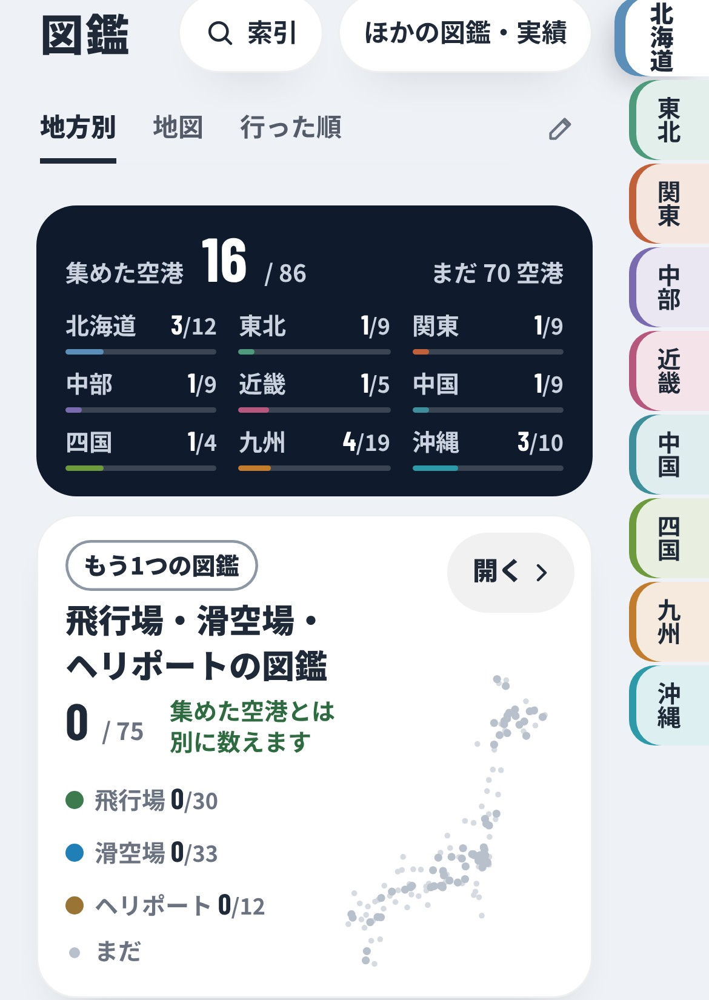
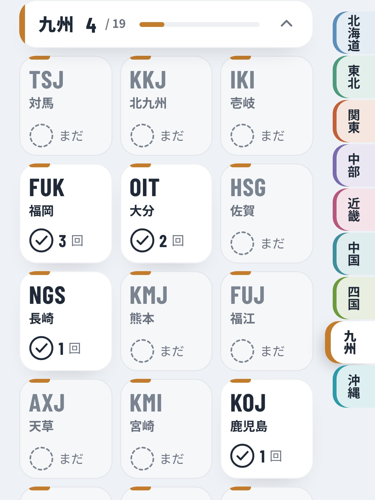
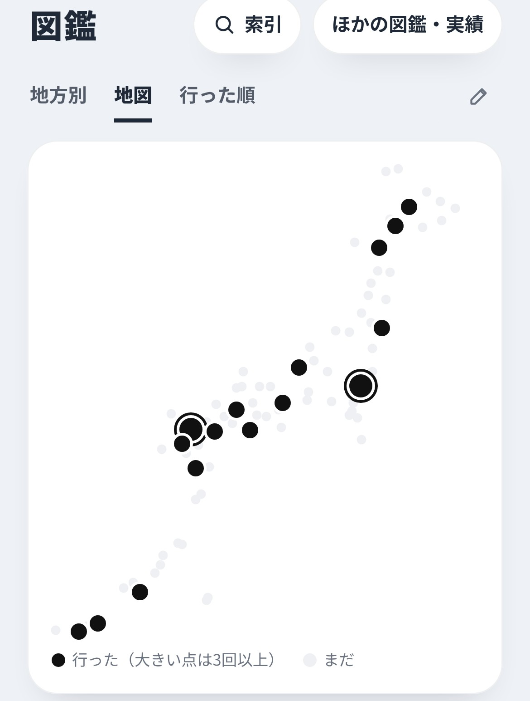
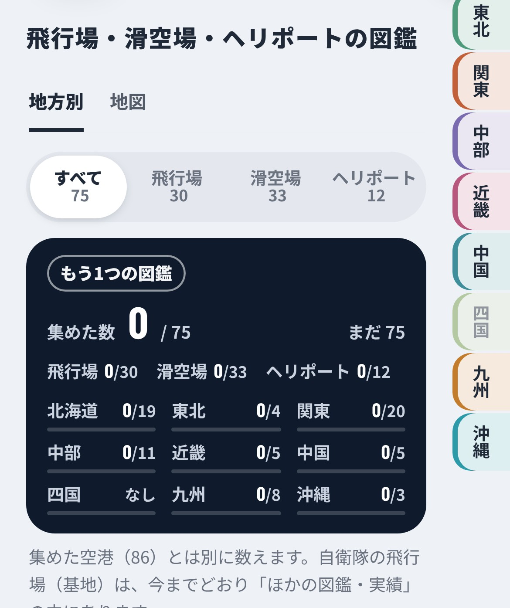
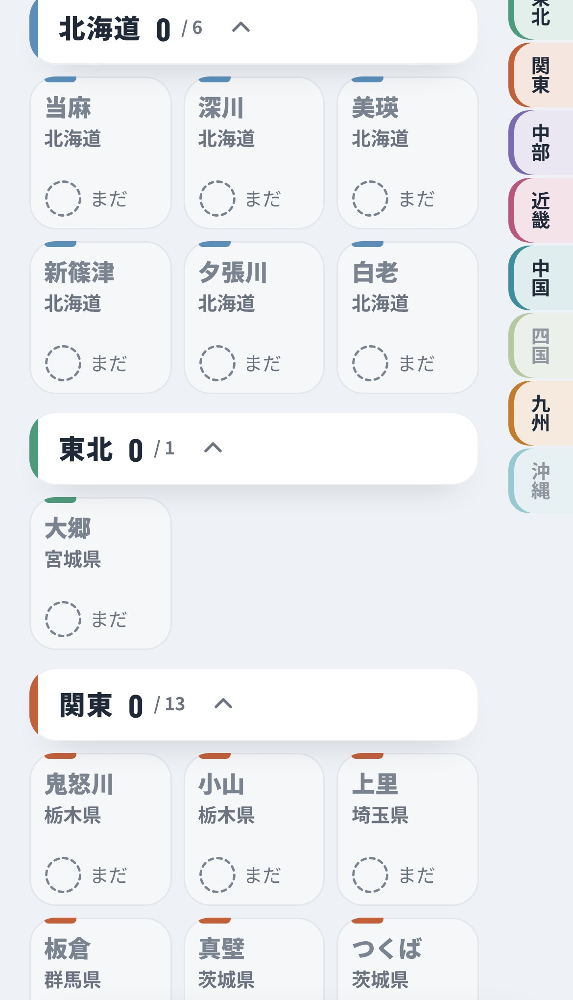
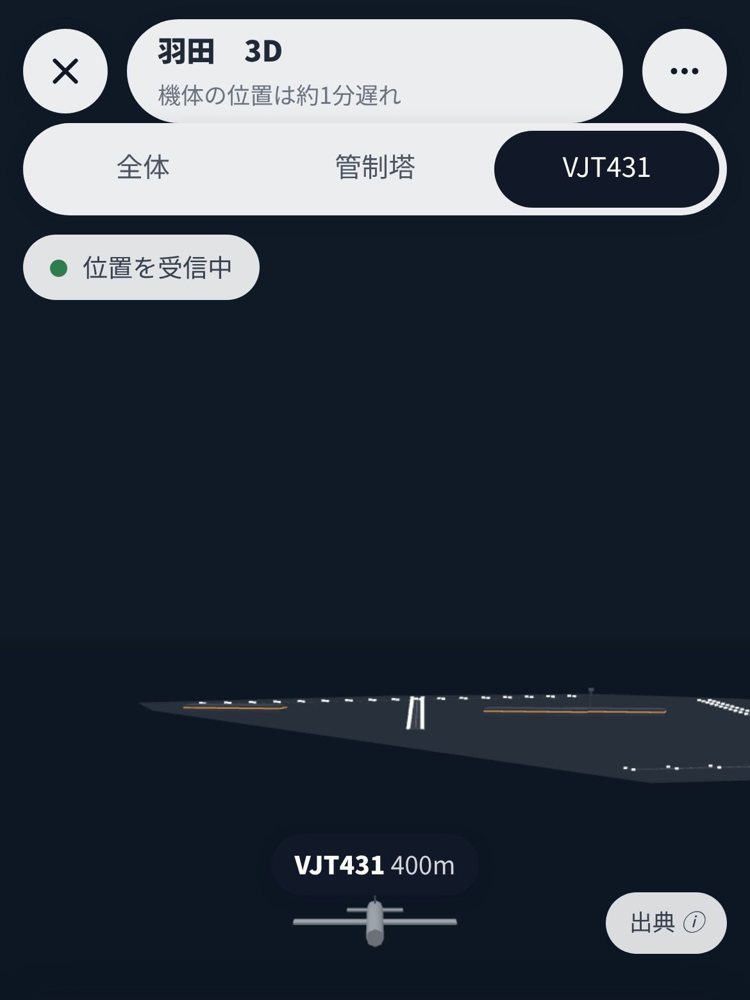
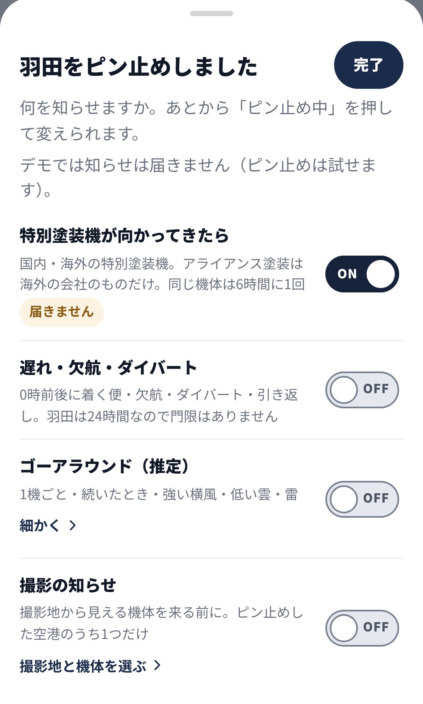
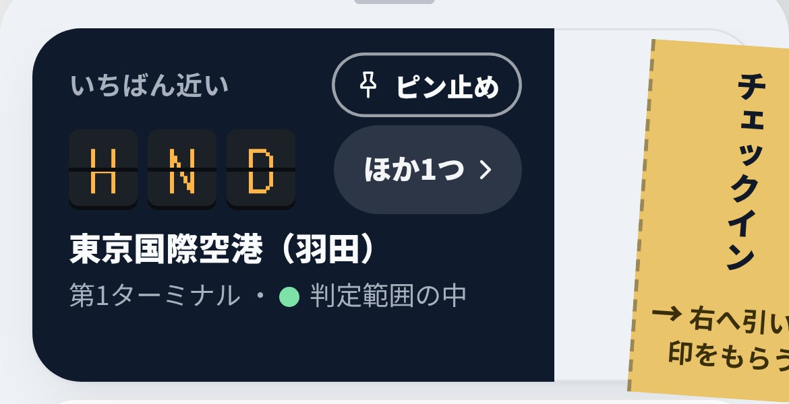
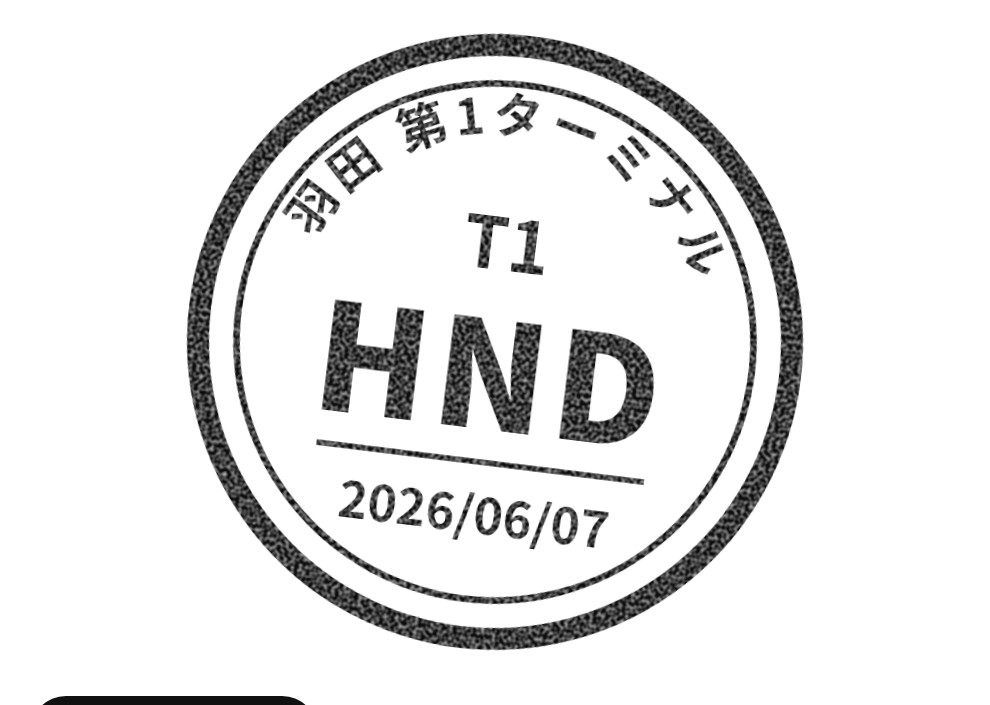
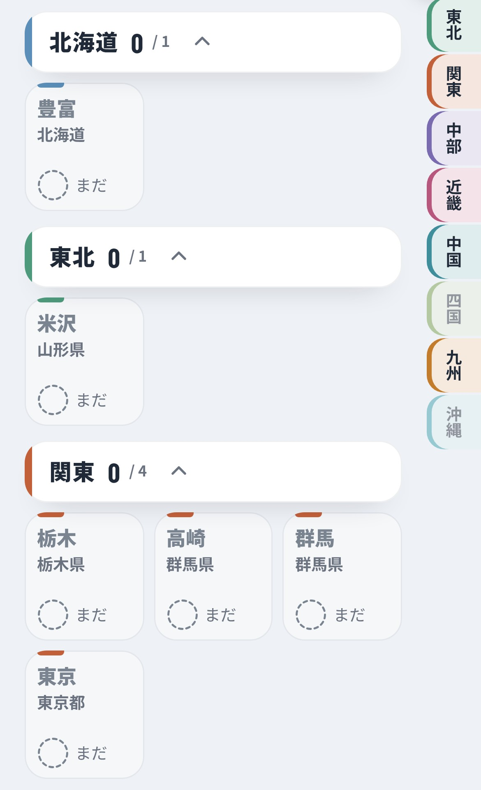

11/21〜29 の新しい機能の広報（図鑑カルーセル6枚・リールJ／K の表紙）
画面は 11/21 1時半に本番（soramemo.jp）の「デモで試す」で撮ったもの（幅390×844・3倍）。数字はデモの見本の記録です。
空港スタンプラリーの図鑑
行った空港、
いくつありますか？国内の空港 86 と、飛行場・滑空場・ヘリポート 75。

そらメモ非公式アプリ・デモの画面1/6
1 地方別
右のツメで、
地方へひとっ飛び押した空港は回数つき。まだの所は点線の丸。

そらメモ非公式アプリ・デモの画面2/6
2 地図
日本地図で、
行った所が点に3回以上の空港は大きな点。

そらメモ非公式アプリ・デモの画面3/6
3 もう1つの図鑑
飛行場・滑空場・
ヘリポートの図鑑集めた空港（86）とは別に数えます。

そらメモ非公式アプリ・デモの画面4/6
4 種類で絞る
滑空場だけ、
県の名前つきで飛行場・滑空場・ヘリポートを切り替えて見られます。

そらメモ非公式アプリ・デモの画面5/6
そらメモ（非公式アプリ）
次の旅で、
図鑑のマスを1つ。空港の判定範囲の中で半券を切ると、その空港の印が押され、図鑑のマスが埋まります。
soramemo.jp
プロフィールのリンクから。個人で作っている非公式アプリで、航空会社・空港とは関係ありません。画面と数字はデモの見本です。
そらメモ非公式アプリ6/6
羽田の空港ページから
いま羽田に降りてくる
機体を、3Dで。全体・管制塔・機体の3つの視点。機体の位置は約1分遅れです。

機体の位置：adsb.lol（ODbL）・滑走路：AIP JAPAN
位置は推定を含み、正確さを保証しません。
そらメモ非公式アプリ・デモの画面
よく行く空港を、ホームに
空港をピン止めして、
知らせを選ぶ。運用タブはカードの一覧。押すとその空港の専用ページに。

知らせは機体の位置（adsb.lol・ODbL）や運航情報（公共交通オープンデータセンター）からの推定で、届くことを保証しません。
そらメモ非公式アプリ・デモの画面
空港の円の中で
半券を、指で切る。
それがチェックイン。切れた瞬間に、その空港の印。


そらメモ非公式アプリ・デモの画面
空港で押せる印
いちばん最近、
半券を切った空港は？そらメモでは、空港の判定範囲の中で半券を切ると印が押されます。
ここに 質問のスタンプ
（いちばん最近の空港は？）
（いちばん最近の空港は？）
ここに リンクのスタンプ
そらメモ非公式アプリ・デモの画面
もう1つの図鑑
ヘリポートも、
図鑑のマスに。飛行場30・滑空場33・ヘリポート12を、切り替えて県名つきで。

そらメモ非公式アプリ・デモの画面